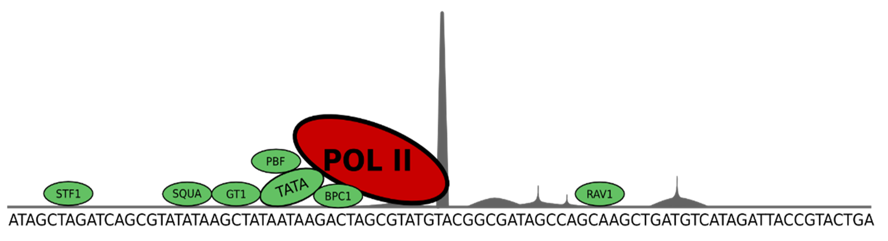

Coreless Promoters in Arabadopsis
The Purpose
To identify the percentage of coreless promoters in the DNA of Arabadopsis (a plant). The goal was to answer these two question:
- How many promoters do not contain any CREs within a 500 BP window of the TSS?
- How many promoters do not contain any CREs within a 50 BP window surrounding their literature reported CRE site locations relative to the TSS?
The Quest
Transcriptional regulation is an essential biological process that promotes cellular growth, differentiation and development. RNA Polymerase II (pol-II) binds to cis-regulatory elements (CREs) encoded in DNA near the start of a gene (see image below). The transcription start site (TSS) is the location on the DNA sequence where pol-II begins transcribing the gene’s DNA code into an RNA copy. The “core promoter region” is the region immediately surrounding the TSS.
{kind=link}
The forward strands and reverse strands are represented below. We are looking to see if there are CPEs are within:
- 500 BP of the TSS
- 50 BP of each CPE’s literature reported location on both the forward and reverse strands near each gene.
{kind=link}
{kind=link}
The Solution
I wrote a Perl script to analyze both the forward and reverse strands of DNA.
Looking at only the forward strands for all genes:
- Percent w/ no CREs in 500 BP TSS window: 17.35%
- Percent w/ no CREs near lit rep sites: 72.92%
Looking at the reverse strands for all genes:
- Percent w/ no CREs in 500 BP TSS window: 13.92%
- Percent w/ no CREs near lit rep sites: 73.72%
Combining the forward and the reverse strands for all genes:
- Percent w/ no CREs in 500 BP TSS window: 4.07%
- Percent w/ no CREs near lit rep sites: 58.13%
The Impact
In the near future this research could be furthered by asking the question of “what drives coreless promoters in Arabidopsis?” The first thing would be to look at whether coreless promoters are always associated with a position specific enhancer element.